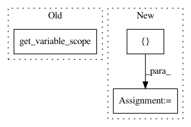

00d47eb3923d8722f75d56ba15139ad6821e2f50,basic/model.py,Model,_build_forward,#Model#,48
Before Change
with tf.variable_scope("rnn1"):
(fw_h, bw_h), _ = bidirectional_dynamic_rnn(cell, cell, xx, x_len, dtype="float", scope="start") // [N, M, JX, 2d]
tf.get_variable_scope().reuse_variables()
(fw_us, bw_us), (_, (fw_u, bw_u)) = bidirectional_dynamic_rnn(cell, cell, qq, q_len, dtype="float", scope="start") // [N, J, d], [N, d]
h = tf.concat(3, [fw_h, bw_h])
u = tf.concat(1, [fw_u, bw_u])
After Change
(fw_h, bw_h), _ = bidirectional_dynamic_rnn(cell, cell, xx, x_len, dtype="float", scope="h1") // [N, M, JX, 2d]
h = tf.concat(3, [fw_h, bw_h])
(fw_h, bw_h), _ = bidirectional_dynamic_rnn(cell, cell, h, x_len, dtype="float", scope="h2") // [N, M, JX, 2d]
h = tf.concat(3, [fw_h, bw_h])
dot = linear(h, 1, True, squeeze=True, scope="dot", wd=config.wd)
// dot2 = linear(h * u, 1, True, squeeze=True, wd=config.wd, scope="dot2")
self.logits = tf.reshape(exp_mask(dot, self.x_mask), [-1, M * JX]) // [N, M, JX]
In pattern: SUPERPATTERN
Frequency: 3
Non-data size: 3
Instances
Project Name: wenwei202/iss-rnns
Commit Name: 00d47eb3923d8722f75d56ba15139ad6821e2f50
Time: 2016-08-29
Author: seominjoon@gmail.com
File Name: basic/model.py
Class Name: Model
Method Name: _build_forward
Project Name: rail-berkeley/softlearning
Commit Name: 65878bf34c16e45b6ffaedef305fa260cf474498
Time: 2018-01-23
Author: haarnoja@users.noreply.github.com
File Name: softqlearning/policies/nn_policy.py
Class Name: NNPolicy
Method Name: __init__
Project Name: IndicoDataSolutions/finetune
Commit Name: bf6414d298d29c12913cf5c83a0277e1db63e6d6
Time: 2020-01-10
Author: lily.zhang@indico.io
File Name: finetune/nn/auxiliary.py
Class Name:
Method Name: embed_context